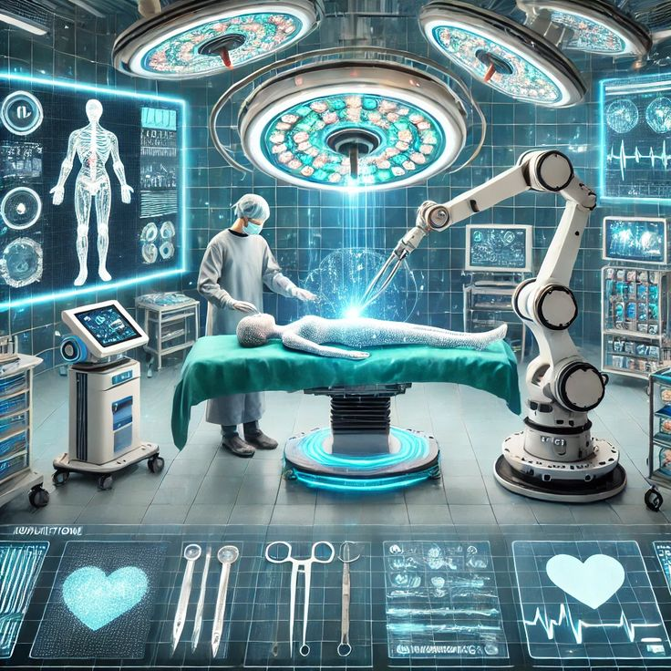
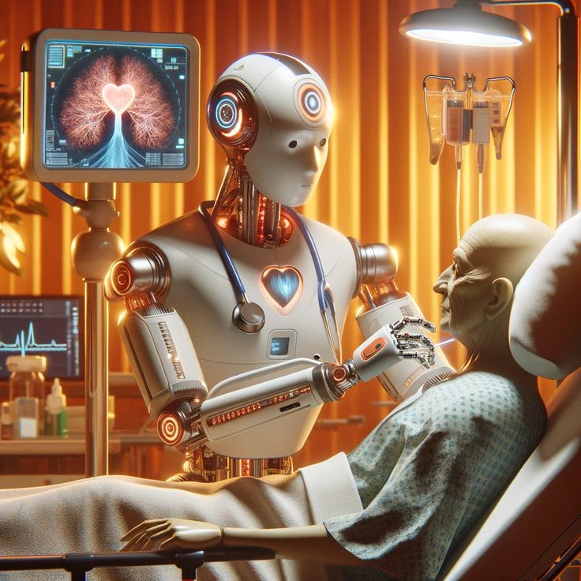
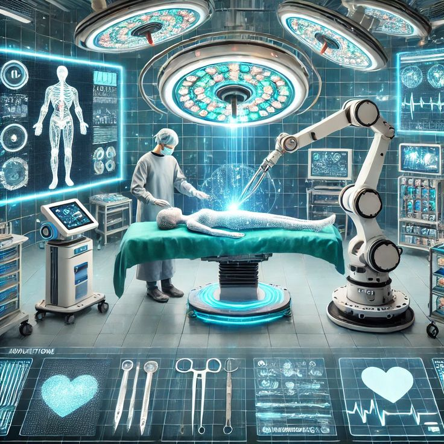
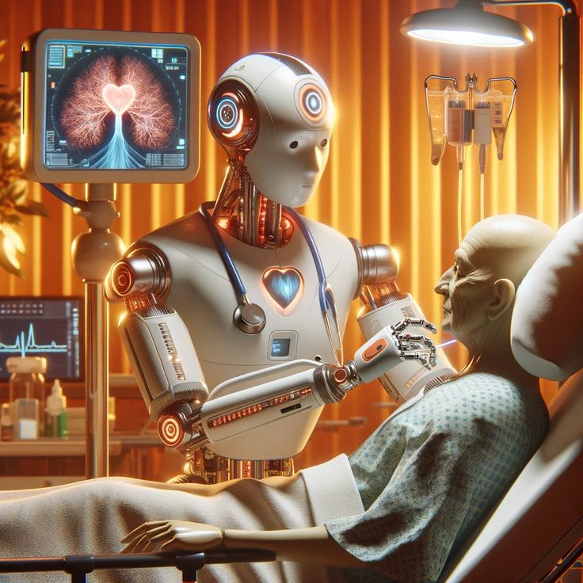

الذكاء الاصطناعي في الطب
الذكاء الاصطناعي في الطب هو أحد أكثر تطبيقاته تأثيرا وتقدما ، حيث يساهم في تحسين التشخيص، العلاج، الرعاية الصحية، وإدارة المستشفيات بشكل كبير. إليك نظرة متعمقة على الذكاء الاصطناعي في الطب
✅ : استخدامات الذكاء الاصطناعي في الطب
1. تشخيص الأمراض
تحليل الصور الطبية (أشعة سينية، رنين مغناطيسي، أشعة مقطعية) لاكتشاف: الأورام (مثل سرطان الثدي، الرئة) الكسور والإصابات أمراض القلب والأوعية خوارزميات مثل CNN (الشبكات العصبية التلافيفية) تُستخدم في تحليل الصور.
2. التحليل الجيني والطفرات
اكتشاف الأمراض الوراثية باستخدام خوارزميات تعلم الآلة لتحليل تسلسل الحمض النووي (DNA). المساعدة في تصميم علاج مخصص (الطب الدقيق - Precision Medicine).
3. الروبوتات الجراحية
أنظمة مثل Da Vinci Surgical System تساعد في: إجراء عمليات دقيقة للغاية تقليل الأخطاء البشرية تقليل فترات التعافي
4. التحليل التنبؤي
التنبؤ باحتمالية إصابة المريض بمرض معين بناءً على: التاريخ الطبي العوامل الوراثية نمط الحياة
5. مساعدات التشخيص (مثل ChatGPT الطبي)
مساعدة الأطباء في اتخاذ القرار بناءً على الأعراض والتاريخ المرضي. تحسين التشخيص السريري وتقليل الأخطاء.
| المرض | التقنية المستخدمة | الذكاء الاصطناعي المستخدم |
|---|---|---|
| سرطان الثدي | تصوير الثدي بالأشعة (Mammogram) | دقة تجاوزت الأطباء -(Google Health) |
| سرطان الجلد | صور جلدية عالية الدقة | أداء مشابه لطبيب الأمراض الجلدية - (CNN) |
| أمراض الرئة والقلب | تصوير (الماسح الضوئي CT ) و ( التصوير بالرنين المغناطيسي MRI) | Arterys |
 


